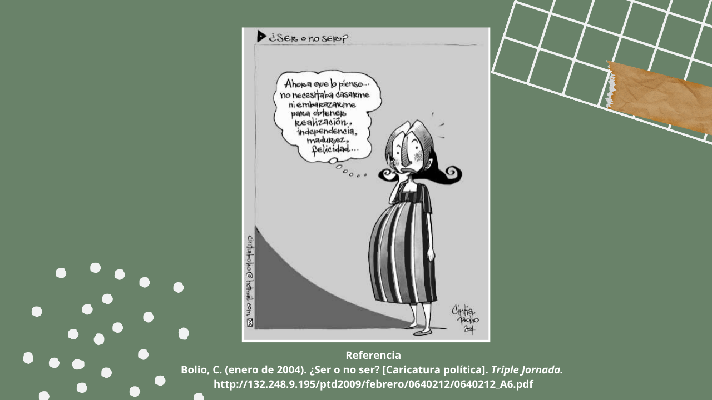
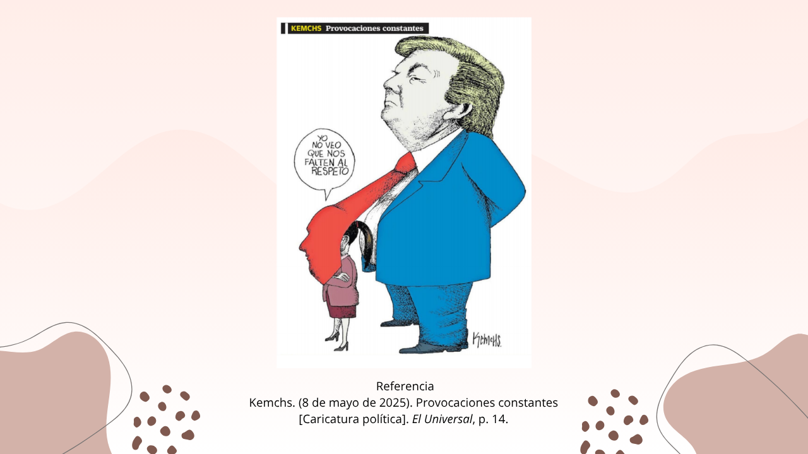
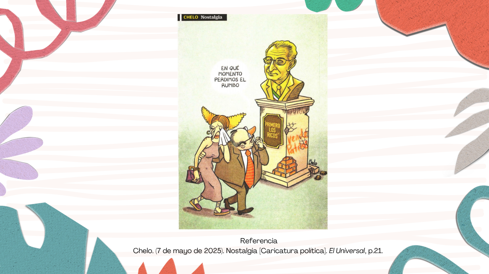
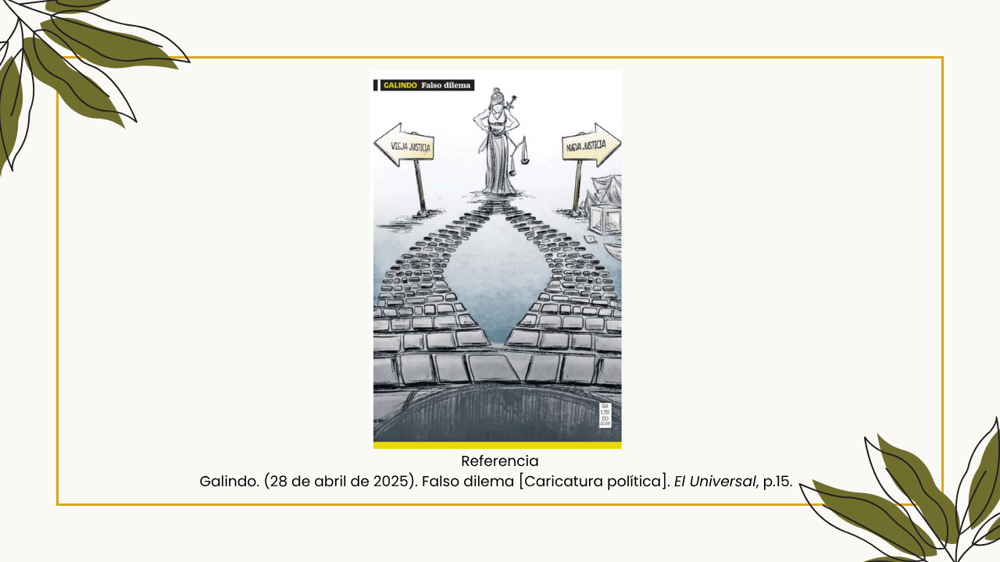

Temática:
- Denotación y connotación.
- Contexto.
- Elementos verbales e icónicos de la caricatura política.
- Recursos retóricos.
SESIÓN 1
Recursos y materiales didácticos
- Crucigrama
- Caricatura política: ¿Ser o no ser? de Cintia Bolio, Desorden de Camacho y Provocaciones constantes de Kemchs

- Caricatura política: Desorden de Camacho

- Caricatura política: Provocaciones constantes de Kemchs

- Video: Denotación y connotación en la Caricatura política
- Formato: Análisis de la caricatura política
- Proyector
- Tableta
- Bocinas
a) Fase inicial
Actividad 1. A pensar y responder
El docente:
a. Comparte el enlace del recurso Crucigrama y pide que lo respondan.
b. Solicita la participación del alumnado para mencionar las palabras que corresponden en cada número.
c. Pregunta: ¿cuáles conceptos se están incorporando en esta sesión?
b) Fase de desarrollo
Actividad 1. ¿Qué nos dice una imagen?
El docente:
a. Proyecta la caricatura política titulada: ¿Ser o no ser?
b. Pregunta a los estudiantes:
¿Qué elementos visuales destacan?
¿Qué creen que quiere transmitir?
¿Les parece graciosa, seria o crítica?
c. Relaciona las respuestas con los conceptos de denotación (lo que se ve), connotación (lo que sugiere) y contexto (información externa que proporcionará).
Actividad 3. Descubriendo el lenguaje de las caricaturas
El docente:
a. Proyecta el video: Denotación y Connotación en la Caricatura política.
b. Aclara dudas en caso de ser necesario.
c. Proyecta la caricatura política: Desorden y solicita la participación de los alumnos para que a partir del contenido del video identifiquen en ella la denotación, connotación y contexto.
Actividad 4. Ejercicio
El docente:
a. Forma equipos de cinco integrantes y entrega el formato nombrado: Análisis de la caricatura política.
b. Proyecta la caricatura política: Provocaciones constantes.
c. Pide que por equipo fomenten el diálogo y respondan lo que se solicita en el formato que se les entregó.
d. Solicita la participación al azar de los equipos para revisar la actividad y en caso de ser necesario hacer puntualizaciones.
c) Fase de síntesis
Actividad 3. La caricatura como espejo de la sociedad
El docente:
a. Fomenta el diálogo en plenaria a partir de las siguientes preguntas: ¿cómo refleja la caricatura política los problemas sociales? ¿qué rol juegan la denotación, connotación y contexto en este género?
b. Recupera las intervenciones del alumnado y realiza una retroalimentación.
Evaluación
El alumnado:
- Resuelve el crucigrama.
- Observa las caricaturas políticas que se presentan y responde los cuestionamientos que se hacen.
- Ve con atención el video que se presenta.
- Trabaja en equipo y analiza una caricatura política.
- Responde por equipo el formato que se entrega.
- Reflexiona sobre el género de la caricatura política y su propósito.
SESIÓN 2
Recursos y materiales didácticos
- El ahorcado
- Caricatura política: Nostalgia de Chelo

- Caricatura política: Falso dilema de Galindo

- Presentación: La caricatura política
- Proyector
- Tableta
1) Fase inicial
Actividad 1. ¿Qué hace única a una caricatura política?
El docente:
a. Proyecta el recurso: El ahorcado y solicita la participación al azar del alumnado con el propósito de recuperar los elementos revisados en la clase anterior.
b. Solicita la participación del alumnado para responder los cuestionamientos que se hacen.
2) Fase de desarrollo
Actividad 2. ¿Qué hace única a una caricatura política?
El docente:
a. Presenta la caricatura política: Nostalgia y pregunta:
¿Qué efecto tiene el texto en la imagen?
¿Qué símbolos o imágenes reconocen?
¿Qué recurso les parece más persuasivo o impactante?
b. Recupera las intervenciones y menciona que es momento de revisar cada uno de los elementos de la caricatura política.
Actividad 3. Lenguaje y retórica en acción
El docente:
a. Expone a través de la presentación: La caricatura política los elementos icónicos y verbales de una caricatura política. Así como, los recursos retóricos: ironía, hipérbole, prosopopeya y comparación.
b. Solicita que de manera individual en su cuaderno hagan un esquema sobre la información relevante.
c. Aclara dudas en caso de ser necesario.
Actividad 4. Lenguaje y retórica en acción
El docente:
a. Pide seleccionar un compañero para realizar la siguiente actividad.
b. Solicita compartir con su par la información que tienen en sus respectivos esquemas.
c. Entrega a cada par la caricatura política: Falso dilema y pide analizar sus elementos icónicos y verbales. Así mismo, la figura retórica a la que recurre.
d. Solicita la participacion al azar en plenaria para revisar el análisis que hicieron.
3) Fase de síntesis
Actividad 5. "Del análisis a la creación"
El docente:
a. Solicita que en parejas, los alumnos propongan un bosquejo de una caricatura política, la cual deberá de ser sobre: equidad de género, sustentabilidad o ciudadania, además de utilizar elementos icónicos, verbales y un recurso retórico.
b. Pide la participación al azar para que compartan su actividad.
c. Realiza el cierre de sesión con las siguientes preguntas: ¿qué aprendimos sobre la construcción del mensaje en la caricatura? ¿cómo influyen los elementos visuales y textuales en la crítica social?
Evaluación
El alumnado:
- Participa en la actividad: El ahorcado.
- Observa una caricatura política y contesta lo que se plantea.
- Atiende la exposición que realiza el docente y realiza un esquema en el que recupera la información importante.
- Trabaja con un par con quien comparte el esquema que realizó, analiza una caricatura política y construye el bosquejo de un texto icónico-verbal de este tipo.